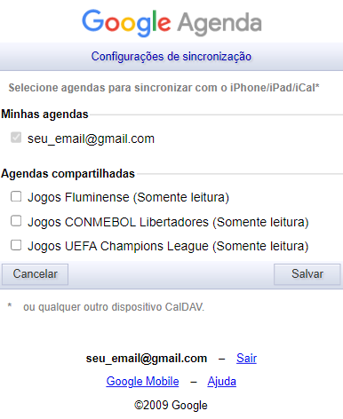

Sincronizando com iPhone
Para ativar a sincronização com o calendário do iPhone,
você deve entrar no seguinte link:
https://calendar.google.com/calendar/u/0/syncselect
Você irá encontrar uma página parecida com essa,
com todos os calendários que salvou aqui no nosso site:

Então, selecione todos os calendários que deseja sincronizar
com o calendário do iPhone no seu dispositivo. Talvez seja necessário
ativar a sincronização toda vez após adicionar um novo calendário.